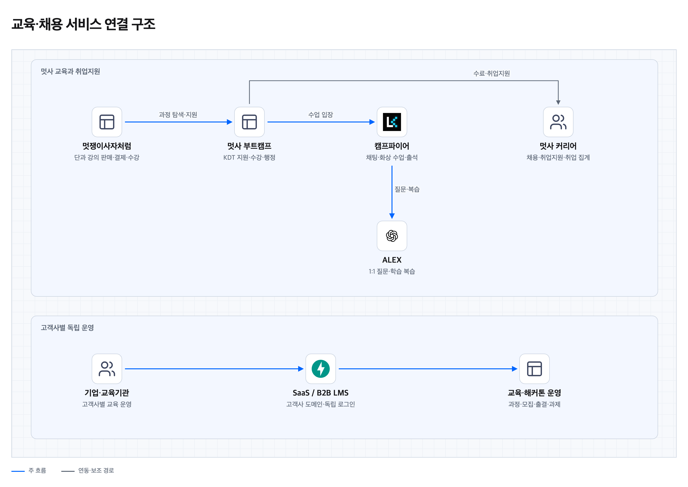

2024.10 ~ 2026.08
전사 인프라 이관과 비용·배포 환경 개선
AWS EKS에서 OCI OKE로 전사 서비스를 옮기면서 인프라 비용과 구성 관리, 배포 방식을 함께 개선한 프로젝트입니다.
월 인프라 비용 56% 감소
2024~2026년 비용·이관 개선을 합친 결과
- 역할
- 기존 환경 조사, 이관 설계와 개발 환경 구축, 운영 인수, 단계별 전환과 잔존 자원 정리를 맡았습니다.
- 기술
- Kubernetes, AWS EKS, OCI OKE, Terraform, ArgoCD, Helm, Vault·ESO, Keycloak, Kong


판단과 이유
콘솔에만 있던 구성을 재현 가능한 코드로 옮기고, 실제 트래픽을 확인한 뒤 전환하기로 했습니다. 비용은 클라우드 변경만으로 설명하지 않고 유휴 자원·지원 과금·외부 솔루션 사용까지 검토했습니다.
구현·개선
- 계정별 청구서와 운영 구성을 대조해 쓰지 않는 서버·디스크·네트워크 자원과 연장 지원 과금을 정리했습니다.
- Terraform, ArgoCD, Helm으로 OKE 환경을 구성하고 시크릿을 Vault와 ESO로 관리하게 했습니다. 개발 환경 확인 뒤 운영을 인수해 전환했습니다.
- 인증서 발급의 DNS 의존성을 고려해 라우팅 준비, DNS 전환, TLS 적용 순서를 나눴습니다. 전환 뒤에도 트래픽을 확인해 남아 있던 API를 옮겼습니다.
- Git에 기록된 배포 이미지와 실제 실행 이미지를 대조하는 절차를 정리했습니다. 준비되지 않거나 종료 중인 Pod로 요청이 가는 문제도 헬스체크와 종료 대기로 보완했습니다.
- 노드의 디스크·Pod 슬롯·네트워크 제약을 구분해 용량을 조정하고 보안 패치가 반영된 노드로 교체했습니다. 애드온 업데이트와 시크릿 동기화 장애의 대응 절차도 운영 문서에 남겼습니다.
결과와 성과
- 서비스 61종을 이관했습니다. 인프라 구성과 배포 변경을 Terraform·GitOps 저장소에서 확인할 수 있게 됐습니다.
- 2024~2026년 유휴 자원 회수, 클라우드 이관과 외부 웹 IDE 교체를 함께 진행해 월 인프라 비용을 청구서 실측 기준 56% 줄였습니다.